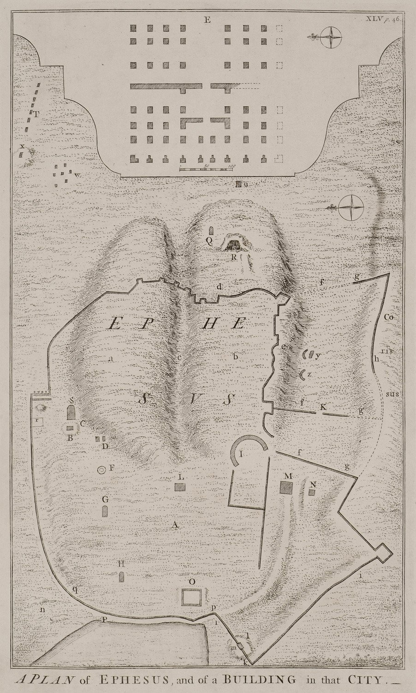

ⓘ
ⓘEphesos war eine der größten Hafenstädte der Antike und eines der glänzendsten Zentren der römischen Provinz Asia; in der Nähe stand der Artemistempel, eines der sieben Weltwunder. Auf der marmorgepflasterten Kuretenstraße vorbei an Brunnen, Tempeln, Latrinen und Läden erlebt man antiken Alltag. Am Ende steht die zweigeschossige Fassade der Celsus-Bibliothek. Das Große Theater mit rund 25.000 Plätzen, die Hafenstraße und die Hanghäuser ergänzen das Bild; Marienhaus und Johannesbasilika machen Ephesos auch für das Christentum bedeutsam. Seit 2015 UNESCO-Welterbe.
⏳ Zeitreise
| Damals | Heute |
|---|---|
| Hauptstadt der römischen Provinz Asia | Ein regionales Zentrum für Verwaltung, Handel und Hafen, wie heute İzmir |
| Großes Theater: 22.000–25.000 Plätze | Ein mittelgroßes Fußballstadion |
| Celsus-Bibliothek: 10.000–12.000 Schriftrollen | Eine Stadtteilbibliothek; das Gebäude war zugleich das Grabmal ihres Stifters |
| Hanghäuser: Mosaiken, Fresken, teils beheizte Räume | Die luxuriösesten Residenzen der Stadt |
| Hafenstraße: vom Hafen zum Theater | Eine Uferpromenade |
| Tetragonos-Agora: ein Platz voller Läden | Ein überdachter Basar oder ein großes Einkaufszentrum |
🎧 Ein Tag in Ephesos
Wir schreiben das Jahr 150. Am Morgen legt Ihr Schiff im Hafen an. Vom Kai führt eine breite Straße in die Stadt, gesäumt von Läden, Händlern und Lastträgern. Heute wäre sie die belebteste Straße der Stadt.
Zuerst geht es auf die Agora: Getreide aus Ägypten, Wein aus Anatolien, Gewürze aus dem Osten. Mittags steigen Sie die Kuretenstraße hinauf. In den Häusern am Hang wohnen die Reichen, mit bemalten Wänden und Mosaikböden.
Am Nachmittag betreten Sie die Celsus-Bibliothek, in deren Regalen Tausende griechische und lateinische Rollen liegen. Am Abend sehen Sie mit über zwanzigtausend Menschen ein Stück im Theater und blicken bei Sonnenuntergang von den Stufen aufs Meer.
Heute liegt dieses Meer kilometerweit entfernt. Der Hafen ist mit der Zeit verlandet, doch die Steine stehen noch immer an ihrem Platz.
Die Zahlen sind Schätzungen; Quellen nennen unterschiedliche Werte. Die Zeichnung ist schematisch, nicht maßstabsgetreu.
Besucherleitfaden
🚌 Anreise
Ephesos liegt etwa 3 km vom Zentrum von Selçuk entfernt. Von İzmir fahren Züge und Busse nach Selçuk; von dort geht es zu Fuß, mit Taxi oder Minibus zur Stätte. Auch ab Kuşadası fahren häufig Minibusse. Es gibt zwei Eingänge, das Untere (Magnesische) und das Obere Tor an der Straße nach Kuşadası, beide mit Parkplatz.
⭐ Nicht verpassen
- Die zweigeschossige Fassade der Celsus-Bibliothek
- Das Große Theater und die Hafenstraße
- Die Kuretenstraße mit Hadrianstempel und Latrinen
- Fresken und Mosaiken der Hanghäuser (eigenes Ticket)
- Odeion und Staatsagora
🏺 Funde und Kunstwerke
- Die meisten Funde im Ephesos-Museum in Selçuk, darunter zwei Artemisstatuen und Eros-Reliefs
- Reliefs des Partherdenkmals im Ephesos-Museum in Wien
👤 Bedeutende Persönlichkeiten
- Paulus lebte und predigte hier
- Das Grab des Apostels Johannes liegt in der Basilika auf dem nahen Ayasuluk-Hügel
- Maria soll ihre letzten Jahre im nahen Haus der Maria verbracht haben
- Der Philosoph Heraklit stammte aus Ephesos
💡 Tipps
Im Sommer früh zur Öffnung oder am späten Nachmittag kommen; es gibt kaum Schatten, Hut und Wasser mitnehmen. Am bequemsten ist der Weg vom Oberen Tor bergab zum Unteren Tor. Mit Ephesos-Museum, Artemistempel und Johannesbasilika in Selçuk einen ganzen Tag einplanen.
Lageplan

Plan: Richard Pococke · Public domain · Wikimedia Commons
Historische Zeichnung – der heutige Grabungsstand kann abweichen.
Häufige Fragen
Wo liegt Ephesos?
Ephesos liegt in Selçuk, İzmir (Ägäis). Für die Anfahrt nutzen Sie die Karte oder den Routen-Button auf dieser Seite.
Wie viel Zeit braucht man für Ephesos?
Durchschnittliche Besuchsdauer: 2–4 Stunden.
Gilt der Museumspass in Ephesos?
In vom Ministerium betriebenen Museen und Stätten meist gültig.
Aus welcher Epoche stammt Ephesos?
Ephesos stammt aus der Epoche: Hellenistisch / Römisch.
Was gibt es in der Nähe von Ephesos zu sehen?
Nächstgelegene Kulturstätten: Efes Örenyeri-Yamaçevler (~1 km), Museum Efes Deneyim (~1 km), Museum Ephesos (~3 km).
Gibt es einen Audioguide für Ephesos?
Ja. Mit dem Hören-Button auf dieser Seite können Sie die Einführung in 7 Sprachen anhören (Türkisch, Englisch, Deutsch, Spanisch, Arabisch, Chinesisch, Hindi).
♿ Barrierefreiheit
Für diesen Ort liegen noch keine geprüften Angaben zur Barrierefreiheit vor. Wir sammeln Hinweise von Besuchern und Museen und veröffentlichen sie nach Prüfung.
In Museen und Ausgrabungsstätten des Ministeriums für Kultur und Tourismus haben Besucher mit Behinderung und eine Begleitperson gegen Vorlage eines Nachweises freien Eintritt. Bitte prüfen Sie die aktuellen Bedingungen vor dem Besuch. Ratgeber Barrierefreiheit →
♿ Angaben zur Barrierefreiheit senden
Verwandte Führer
Fotos
Übernachten und Essen in der Nähe
Möchten Sie Ihr Unternehmen hier zeigen? Werbung schalten